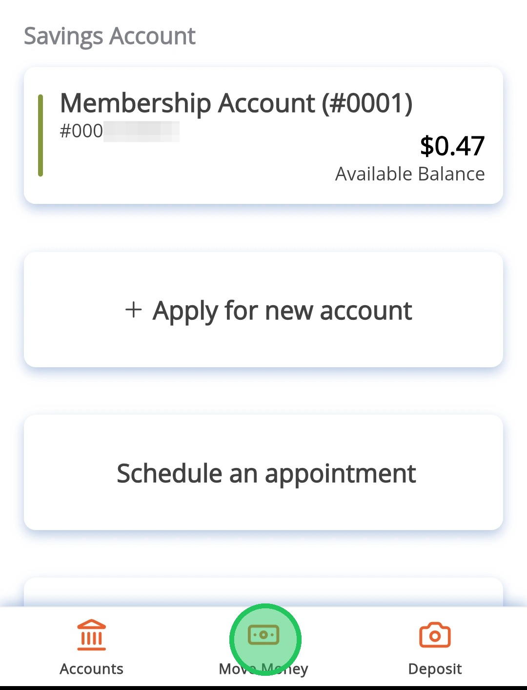
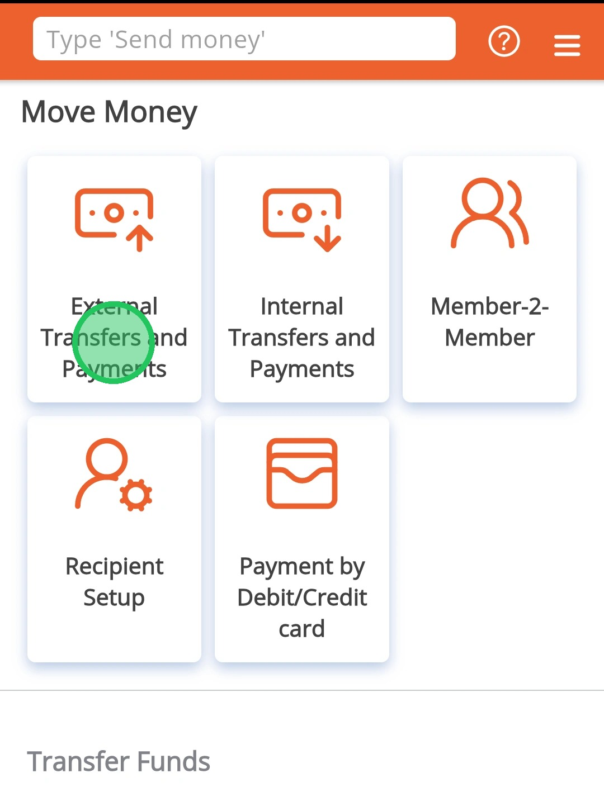
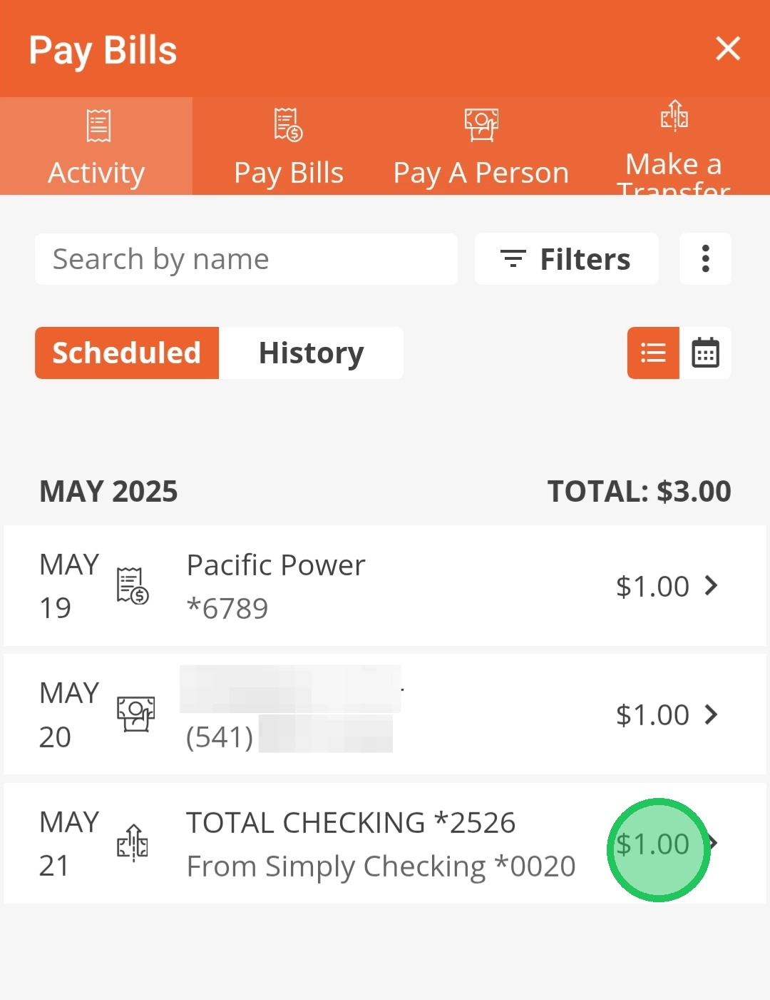
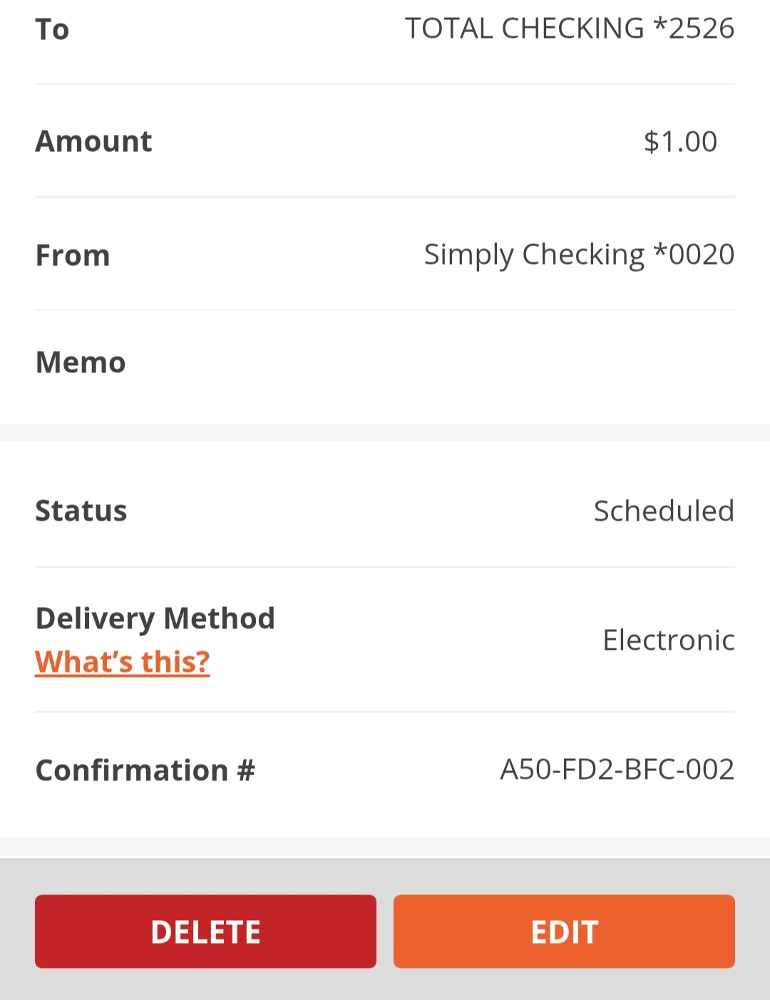

Edit Scheduled External Transfers
This guide is to show how to find scheduled External Transfers and edit/delete them.
1
Tap "Move Money"

2
Tap "External Transfers & Payments"

3
Find the payment or transfer you want to change. Tap on it to see your options. You can choose to delete it (remove it completely) or edit it (make changes).

4
Tap "Delete" to remove the transfer or "Edit" to change the transfer
